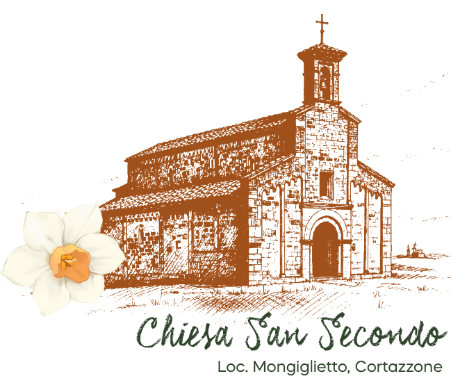

La Cerimonia
Cortazzone d'Asti · XI Secolo
Pieve di San Secondo
Strada San Secondo — 14010 Cortazzone (AT)
Capolavoro romanico dell'XI secolo immerso tra querce secolari su una collina panoramica. Parcheggio dedicato ai piedi della salita, con breve passeggiata pedonale di 2 minuti.